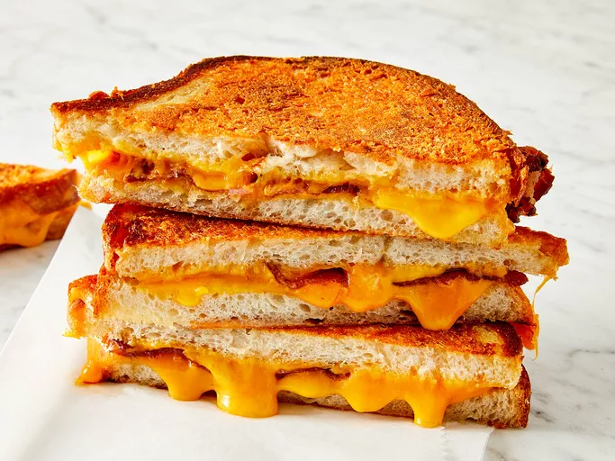

Home
Grilled Cheese

Description
Craving something simple, timeless, and tasty? This recipe is perfect for those grilled cheese cravings we all get from time to time.
This recipe takes about 15 minutes to make, and it will keep you coming back.
Ingredients
- Butter
- Parmigiano-Reggiano cheese
- Bacon
- Cheddar Cheese
- Sourdough bread
Steps
- Mash together butter and Parmesan cheese.
- Place two slices of bacon and one slice of Cheddar cheese on half of the bread pieces and top them with remaining slices of bread.
- Spread butter mixture on the top of each sandwich and place on a large skillet over medium heat.
- Cook until golden brown on each side, about 3 minutes.